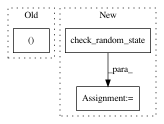

eaed2c8a781462fa322f48425795919244a5d957,nilearn/connectivity/tests/test_embedding.py,,test_vec_to_sym,#,362
Before Change
[1., 1., sqrt(2)]]) / sqrt(2)
assert_array_almost_equal(vec_to_sym(vec), sym)
mask_vec = vec > 0
mask_sym = np.ones((3, 3), dtype=bool)
assert_array_equal(vec_to_sym(mask_vec, isometry=False), mask_sym)
// Check sym_to_vec is the inverse function of vec_to_sym
After Change
// Check sym_to_vec is the inverse function of vec_to_sym
n = 41
p = n * (n + 1) / 2
random_state = check_random_state(0)
vec = random_state.rand(p)
sym = vec_to_sym(vec)
assert_array_almost_equal(sym_to_vec(sym), vec)
vecs = np.asarray([vec, 2. * vec, 0.5 * vec])
In pattern: SUPERPATTERN
Frequency: 4
Non-data size: 3
Instances
Project Name: nilearn/nilearn
Commit Name: eaed2c8a781462fa322f48425795919244a5d957
Time: 2015-07-19
Author: sb238920@is223297.intra.cea.fr
File Name: nilearn/connectivity/tests/test_embedding.py
Class Name:
Method Name: test_vec_to_sym
Project Name: scikit-learn-contrib/imbalanced-learn
Commit Name: 9b31677971ef20cb033e787cdaac6f639a728e05
Time: 2019-11-17
Author: redoykhan555@gmail.com
File Name: imblearn/under_sampling/_prototype_selection/_instance_hardness_threshold.py
Class Name: InstanceHardnessThreshold
Method Name: _fit_resample
Project Name: dirty-cat/dirty_cat
Commit Name: 8ab45da9d290f8aefefb5e9bf72a6a0e930816d3
Time: 2018-11-19
Author: maxime.cuny@inria.fr
File Name: dirty_cat/similarity_encoder.py
Class Name: SimilarityEncoder
Method Name: fit
Project Name: scipy/scipy
Commit Name: e4cfcbf4b7994278186d4537f5c1edd8fa93e609
Time: 2020-04-26
Author: andyfaff@gmail.com
File Name: scipy/sparse/construct.py
Class Name:
Method Name: random